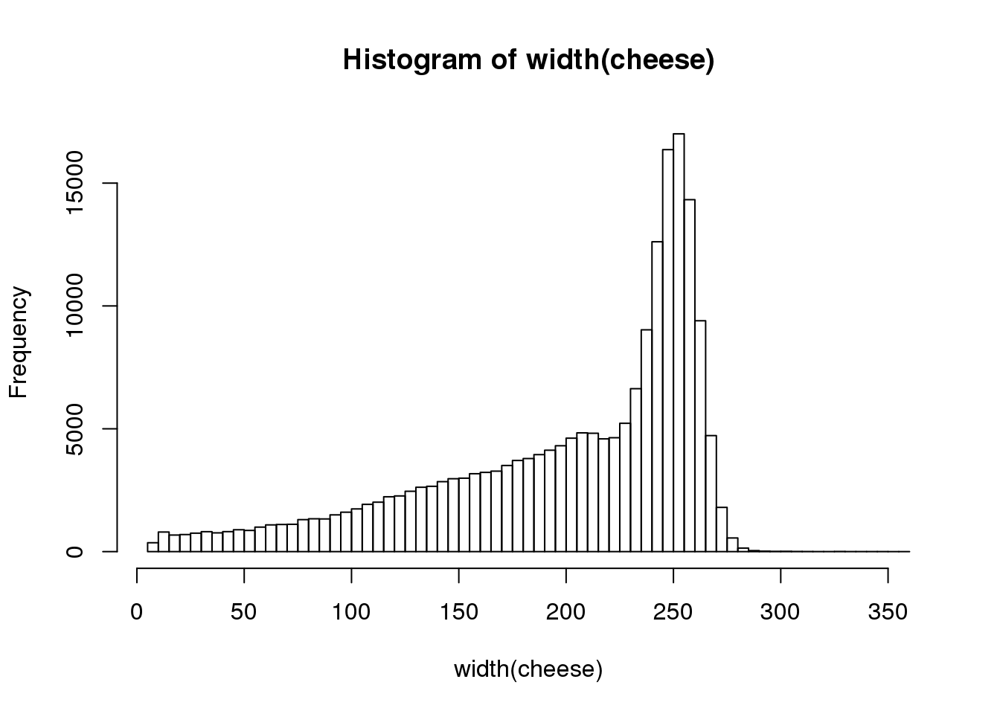
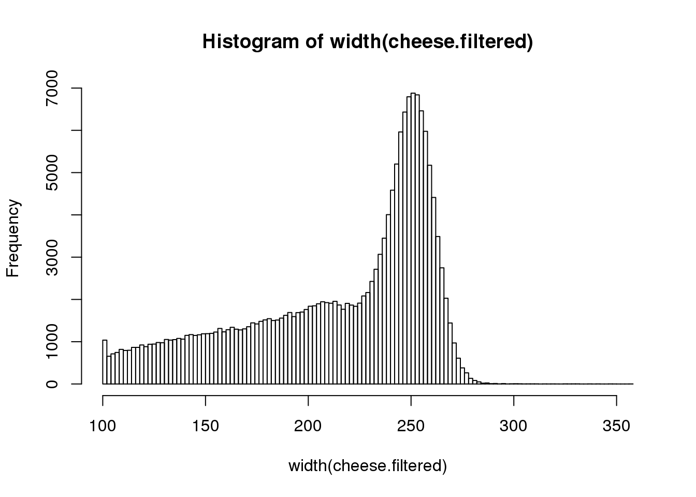
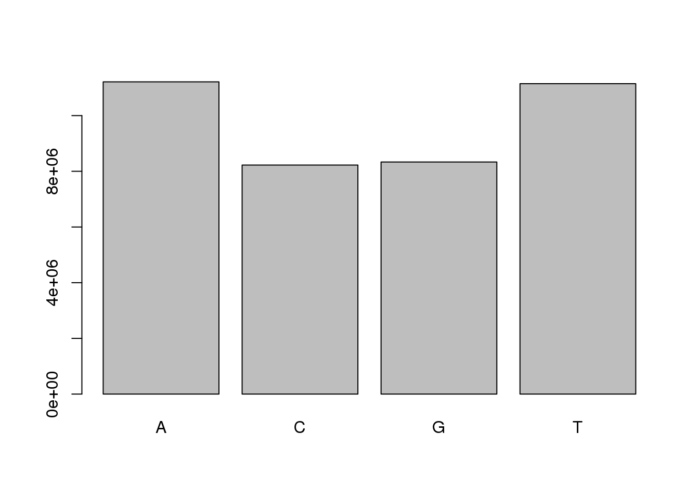
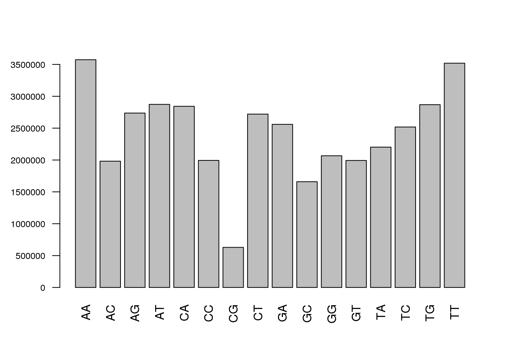
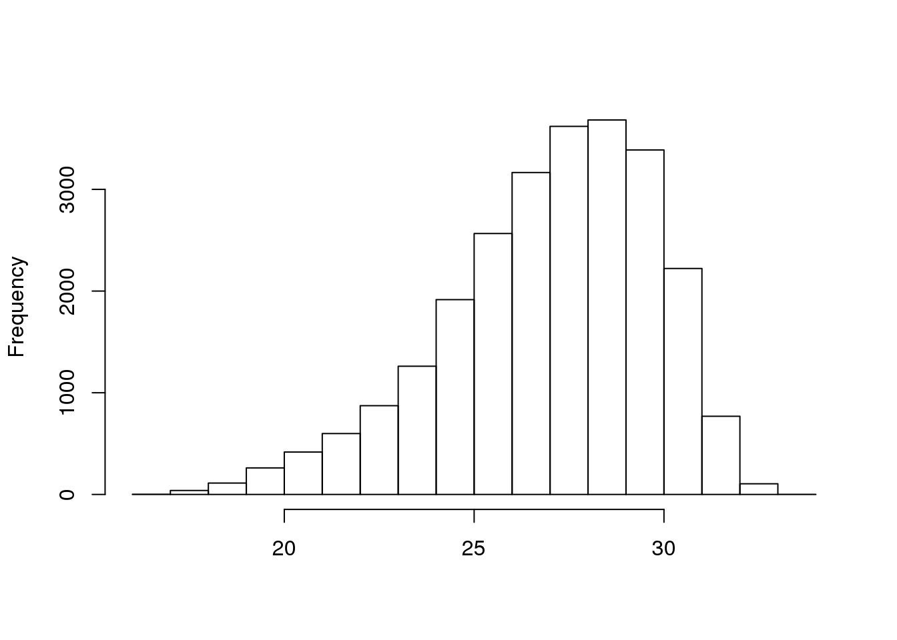
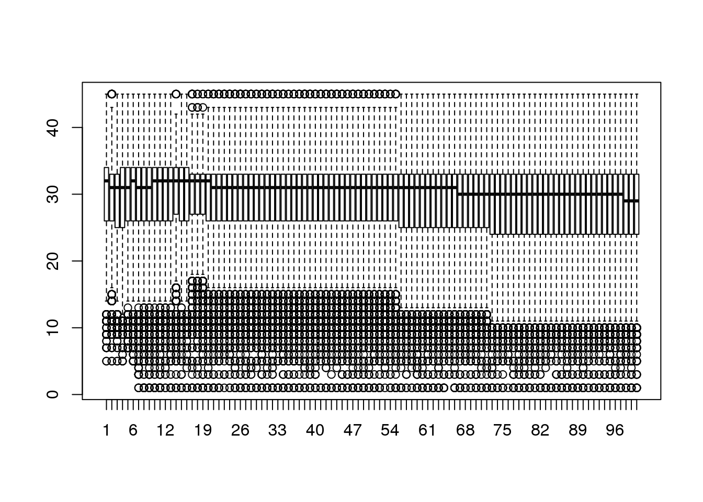
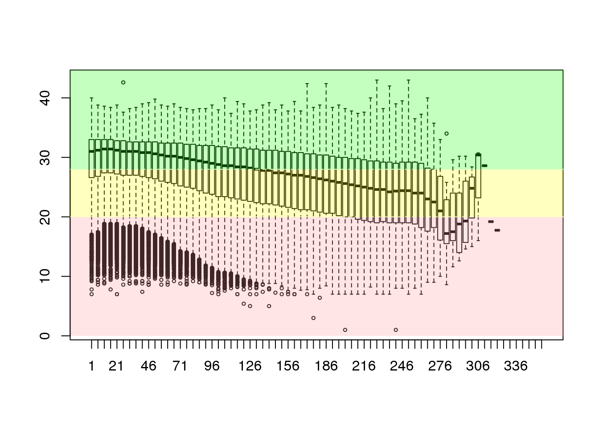
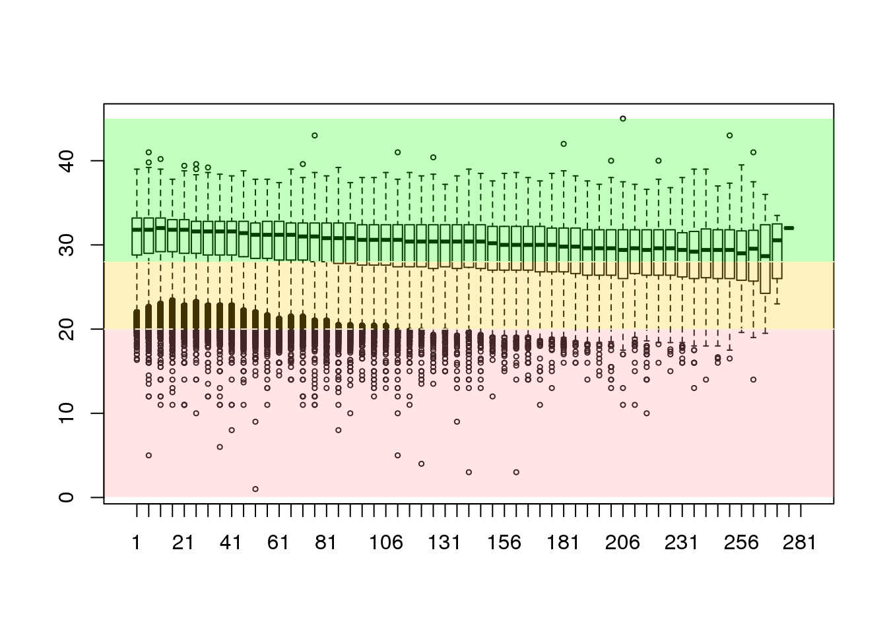

1.3 Parsing FastQ files
For a more comprehensive review of what can be performed using R/Bioconductor for short reads let us have a look at some data from the public domain. The Short Read Archive (SRA) hosted by the NBCI and provides a public repository where high dimensional data can be shared with the community. Study ERX337002 looks at the metagenomics of food (http://www.ncbi.nlm.nih.gov/sra/ERX337002). The Ion Torrent platform has been used to sequence the microbial content of an artisanal cheese.
The raw data has been downloaded from the public domain and has been converted from the sra format into a fastq file format (using SRA Toolkit) that can be used with a number of packages. The fastq file prepared has been gzipped to save space (and increase read performance).
curl -0 ftp://ftp-trace.ncbi.nlm.nih.gov/sra/sra-instant/reads/ByExp/sra/ERX/ERX337/ERX337002/
ERR364233.sra
fastq-dump ERR364233.sra
gzip ERR364233.fastqA brief summary of the content in the file can be prepared by loading the fastq file with the readFastq function.
cheese <- readFastq(file.path(NGS_DIR, "ERR364233.subset.fastq.gz"))
print(cheese)## class: ShortReadQ
## length: 200000 reads; width: 8..358 cyclesqaSummary <- qa(cheese, NGS_DIR)
report(qaSummary, dest="./results")## Warning in dir.create(dest, recursive = TRUE): './results' already exists## [1] "./results/index.html"- Enter the above commands.
- Click on the Files tab in the bottom-right corner of RStudio, then click on More > Go to working directory.
-
Click on New Folder and create the
resultsfolder. -
Run the
qaSummary()andreport()commands as above, if not already done. - Click on the results folder and the index.html file.
- Select the View in Web Browser (if a popup window appears click Try again).
-
Have a look a the report from the
qaSummary()function.
This shows that there are 200K sequence reads in the sequence collection that have a length of between 8 and 358 nucleotides. Let’s have a look at the distribution of read lengths:
hist(width(cheese), breaks=100)
We recommend that we do not use such short reads in our sequence collection. Filter out sequences that are less than 100 nt in length and replot the distribution.
cheese.filtered <- cheese[-which(width(cheese) < 100)]
hist(width(cheese.filtered), breaks=100)
How many reads were removed from the filtering step? _________ (hint length())
We have looked at the distribution of sequence lengths in the collection. We can also check the distribution of individual nucleotides in the collection. The alphabetFrequency function collects frequency counts for each of the IUPAC nucleotides in a DNAStringSet object. The method will generate a table that be summarised and plotted using your preferred graphics library.
freq <- alphabetFrequency(sread(cheese.filtered))
totalCount <- colSums(freq)
barplot(totalCount[1:4])
- Run the command above.
-
What data type is the variable
freq? ________ -
What are the dimensions of
freq? ______________ -
Why did we only plot the first 4 elements of
totalCount? ________
Similar plots can be prepared for di- and trinucleotide frequencies, this looks at all possible words. You can similarly look for hexanucleotide frequencies or any other number, check the alphabetFrequency() documentation. This can assists in detecting any over-represented subsequences.
barplot(colSums(dinucleotideFrequency(sread(cheese.filtered))),cex.axis = 0.75, las=2)
Depending on the sequencing strategy that you applied, you may have ligated synthetic adapter sequences, primers and other constructs within the target amplicons. There are a number of methods for stripping such synthetic sequences from your sequence collection.
head(sread(cheese.filtered))## A DNAStringSet instance of length 6
## width seq
## [1] 173 AACATTTGTCCTAATCATTGGGGATACAGGG...TTTCTGCAAATCCTTTTTCTAAAAGATAGAG
## [2] 201 AGAAAATAAAGAGAGAAAACAAACAAACAAA...GAAAGAAACAGAGAAGAAGAAAGAAAAAAAA
## [3] 198 GGTGACCTTTTTTTTTTTTTTTTTTCAAGAA...AGACTTGGCAAACAGAAAAGGAGGGTATCAA
## [4] 123 TTTTATTTGTTTTTTGATGCTATAGTAAATG...TTTCTATATGATGAGTTTAGCATTCTGCAAT
## [5] 189 CACGACTGGATGCAGATCGCTGCAGAGACCA...CCTCAGGTGGCCTGGATCTTCGTGGCTGTGG
## [6] 246 TTATAAAATGTAACTTGTAATTATACTGTAG...AAACTCTTGCATGAGAAGAGTTTTAGCACTGcloningPrimer <- "AACATTTGTCCTAATCATTGGGGATA"
cheese.clipped <- trimLRPatterns(Lpattern = cloningPrimer, subject=cheese.filtered,
max.Lmismatch = 0.33)
head(sread(cheese.clipped))## A DNAStringSet instance of length 6
## width seq
## [1] 147 CAGGGATTTGATAGATCATTTCCCTATCCTC...TTTCTGCAAATCCTTTTTCTAAAAGATAGAG
## [2] 200 GAAAATAAAGAGAGAAAACAAACAAACAAAT...GAAAGAAACAGAGAAGAAGAAAGAAAAAAAA
## [3] 198 GGTGACCTTTTTTTTTTTTTTTTTTCAAGAA...AGACTTGGCAAACAGAAAAGGAGGGTATCAA
## [4] 123 TTTTATTTGTTTTTTGATGCTATAGTAAATG...TTTCTATATGATGAGTTTAGCATTCTGCAAT
## [5] 189 CACGACTGGATGCAGATCGCTGCAGAGACCA...CCTCAGGTGGCCTGGATCTTCGTGGCTGTGG
## [6] 246 TTATAAAATGTAACTTGTAATTATACTGTAG...AAACTCTTGCATGAGAAGAGTTTTAGCACTGThere is of course a lot more that can be done to allow for perfect, imperfect and truncated primer sequences or adapters at either the forward or reverse ends of the sequence.
One of the reasons why the fastq file format has become so popular in genomics is that in addition to storing information relating to the DNA sequence, the file stores information on the DNA sequence and the quality (confidence score that the base has been measured correctly).
The quality scores in a ShortRead data collection are accessible using the quality() function.
head(quality(cheese.clipped))## class: FastqQuality
## quality:
## A BStringSet instance of length 6
## width seq
## [1] 147 99@B:999-499?9999999049599=B=>;...//*//////+4924444+44444,4444//6
## [2] 200 A>>>4999-999A9999/444-444049967...77<6;<;:;@@<>A:<=B777.777777777
## [3] 198 A@BA;;244499994444444444"4424;@...6>@AA@@>79969;9@@@4><999-7@?888
## [4] 123 499+444-444444(4;9=@CB@==44408>...8828==ACB<;9>>99909@8-,*,,,//,4
## [5] 189 ?@>1//8<1/9BCCBDDC@@ADCCDCDDD@D...;,4444844242442//88,/0443.3488,
## [6] 246 4-44444,444989@=;;@;>311>>>CCCC...99198774773333339771111,1111116encoding(quality(cheese.clipped))## ! " # $ % & ' ( ) * + , - . / 0 1 2 3 4 5 6 7 8 9
## 0 1 2 3 4 5 6 7 8 9 10 11 12 13 14 15 16 17 18 19 20 21 22 23 24
## : ; < = > ? @ A B C D E F G H I J
## 25 26 27 28 29 30 31 32 33 34 35 36 37 38 39 40 41cheese.quality <- as(quality(cheese.clipped), "matrix")
hist(rowMeans(cheese.quality[sample(nrow(cheese.quality), 25000),],na.rm=TRUE),
main="", xlab="")
- Type in the commands above.
-
What data type is the variable
cheese.quality? ______________ -
What is the dimension of
cheese.quality? ______________________ -
How does the number of columns relate to the length of the reads? _____
-
Below are the broken-down parts of the
hist(…)function that produced the plot above. The list starts with the most inner function and works it’s way out. Can you describe what each inner function is doing and the expected result? The letter in the curly braces e.g. {a} means substitute the result from the part {a} into this function.
-
nrow(cheese.quality): ______________________ -
sample({a}, 25000): ______________________ -
cheese.quality[{b},]: _____________________ -
rowMeans({c}, na.rm=TRUE): _________________ -
hist({d}, main=“”, xlab=“”): _______________
The code above presents a text format (representation of the integer based quality scores) of the quality data. This is converted into a qualityMatrix that can then be plotted to show the distribution of quality scores across the sequence collection.
Plotting the per-base quality scores is the goal of many software applications and this can be managed simply in R as well. One of the requirements to produce these plots is however, to reduce the dimensions of the data. Plotting the characteristics for every read is unnecessary since a sample should convey trends within the data.
boxplot(cheese.quality[sample(nrow(cheese.quality), 25000), 1:100],out.cex=0.5)
mung <- function(i) {
lower <- i
upper <- i + 4
if (upper > ncol(cheese.quality)) {
upper <- ncol(cheese.quality)
}
return(rowMeans(cheese.quality[,seq(lower,upper)], na.rm=TRUE))
}
sequence <- seq(1, ncol(cheese.quality), 5)
groupedQuality <- as.data.frame(sapply(sequence, mung))
colnames(groupedQuality) <- as.character(sequence)
boxplot(groupedQuality[sample(nrow(groupedQuality), 25000),], outcex=0.5)
abline(h=c(20,28),lty=2,col='white')
rect(-5,28,358,45,col=rgb(0.1,1,0,alpha=0.25),border=NA)
rect(-5,20,358,28,col=rgb(1,1,0,alpha=0.25),border=NA)
rect(-5,0,358,20,col=rgb(1,0.6,0.6,alpha=0.25),border=NA)
Having prepared this box-and-whisker plot we can see that the distribution of quality scores is generally OK but there are quite a large number of low quality bases described as the interquartile ranges within the whiskers. To make the data most valuable to the analysis it would be worthwhile to filter the sequences to exclude the substrings of lowest quality from the 3’-end forwards. The ShortRead package implements some easy to use functions such as trimTails and trimTailw.
cheese.clipped <- trimTailw(cheese.clipped, k=4, a="4", halfwidth=5)
cheese.quality <- as(quality(cheese.clipped), "matrix")
dim(cheese.quality)## [1] 160256 284sequence <- seq(1, ncol(cheese.quality), 5)
groupedQuality <- as.data.frame(sapply(sequence, mung))
colnames(groupedQuality) <- as.character(sequence)
boxplot(groupedQuality[sample(nrow(groupedQuality), 25000),], outcex=0.5)
abline(h=c(20,28),lty=2,col='white')
rect(-5,28,358,45,col=rgb(0.1,1,0,alpha=0.25),border=NA)
rect(-5,20,358,28,col=rgb(1,0.8,0,alpha=0.25),border=NA)
rect(-5,0,358,20,col=rgb(1,0.6,0.6,alpha=0.25),border=NA)
This shows that we have greatly improved the overall structure of the data and have removed a large number of the less-than-perfect bases. This example may have been a little more aggressive than we would really wish to apply in the laboratory setting.
The ShortRead package has a well implemented framework for filtering sequences and it would be simple to implement other filters as required. The filter can be illustrated by filtering out the homopolymers from the sequence collection. These provide mechanisms for restricting the sequence collection on the basis of e.g. base composition, number of N-residues and even relative abundance.
A whole lot more can be done using the ShortRead and Biostrings packages.
Prepare some QC information for an Illumina data collection
Using the RNA-Seq reads that you will perform differential expression with, prepare a brief report of the data. Using the qaSummary function to prepare a synopsis of the library content and investigate the per-base quality scores across the sequence collection. Would you recommend that we re-run the analysis after some data trimming?
Have a look at the over-represented k-mer words in the sequence collection and see if you can create a filter to strip-out the sequence that contain the most abundant k-mer.